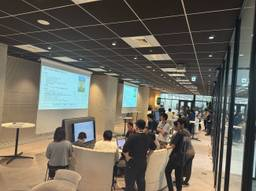

OPTiM TECH BLOG
https://tech-blog.optim.co.jp/
オプティムの企業テックブログ。OPTiMのエンジニアが技術情報を発信。AIの最新動向からクラウドのアーキテクチャ、Web開発、モバイルアプリ開発まで多様な技術を紹介。AI・IoTプラットフォームや、農業、医療、建設向けサービスを実現しています。
フィード

エンジニアが全社横断のイベント「一人一言でゲームを作る！？AI体験会」を企画から運営までやってみた
OPTiM TECH BLOG
はじめに こんにちは！ OPTiM Asset / OPTiM サスマネ のプロダクト開発をしている高橋、遠藤(25新卒)、OPTiM Contractのプロダクト開発をしている田中です！ www.optim.co.jp www.optim.co.jp 今回は、AIコーディングアシスタントツールの全社横断の体験イベントを弊社の有志のエンジニアが主体となって企画から運営まで行った話を紹介いたします！ イベント開催の背景 既にお知らせやテックブログで公開されている通り、弊社では開発生産性の向上やコード品質の向上を目的として、弊社所属の全エンジニアに向けてAIコーディングアシスタントの導入を行いまし…
5日前

エンジニアの生産性2.45倍!? OPTiMがAIコーディングアシスタントサービスのROIを算出して全社導入するまで
OPTiM TECH BLOG
コーディングアシスタントサービスの全社導入に至った背景および、それまでの道のりを記載しています。
25日前
みんなで見れば理解も深まる！エンジニアの「ゆるっと同時視聴会」をやってみた
OPTiM TECH BLOG
テック系イベントを社内でみんなで同時視聴する「ゆるっと同時視聴会」をやってみた件に関して、紹介をしてみます。
1ヶ月前
TSKaigi 2025に協賛・参加してきました
OPTiM TECH BLOG
こんにちは。OPTiMの白木、佐川です。今回はTSKaigi 2025に協賛・参加してきましたので、当日の雰囲気をお伝えします。 TSKaigi運営対応のため1人写っていませんが、有志の正スタッフ6人と1人の学生のアルバイトスタッフが参加しました。 また、学生旅費支援制度を活用して現地に参加しました。 TSKaigi 2025について TSKaigi 2025はベルサール神田で 2025年5月23日〜2025年5月24日の2日間開催されました。 なんと306件ものプロポーザルから厳選されたセッションが行われ、専門的でTypeScriptの最前線を体感できる充実した内容でした。 また、弊社は去年…
2ヶ月前
OPTiM Developer's .env 開発PC編
OPTiM TECH BLOG
※中身の入った箱です お久しぶりです、マネージャーの中村です。最近はR&D（研究開発部署） → アプリケーション開発エンジニア → エンジニアリングマネージャーと姿形を変え、プロダクトのお金・人の管理、採用・キャリア施策検討、プロダクトのロードマップを考えたりといろいろとやっています。過去には以下のような記事を投稿していました。 tech-blog.optim.co.jp tech-blog.optim.co.jp 「開発PC編」とあるように、今後継続的にOPTiMのエンジニアの周辺のありとあらゆる 環境 に対して 「OPTiM Developer's .env」 というタイトルで、定期的に発…
2ヶ月前
try! Swift Tokyo 2025に参加してきました
OPTiM TECH BLOG
こんにちは！ OPTiM Biz開発チームの山田、北川、片岡、宍戸です。 今回はtry! Swift Tokyo 2025に参加してまいりましたので、会場の雰囲気や内容をレポートします！ try! Swift Tokyo 2025について try! Swiftは、iOS/Swiftエコシステムに焦点を当てた国際的な開発者カンファレンスです。2016年に東京で始まり、その後ニューヨーク、ベンガルール、サンノゼなど世界各地で開催される国際的なSwiftカンファレンスに発展しました。2018年にはAppleのSwiftNIOチームによる世界初の発表の場となり、2019年にはWWDCでSwiftの重要…
3ヶ月前
RubyKaigi 2025 参加レポート
OPTiM TECH BLOG
はじめに こんにちは。オプティムの石原、石元、伊藤、菊池、斉藤、中村です！ OPTiMではRubyを採用した複数のプロジェクトを展開しています。 その中でも、2009年にサービスを開始したOPTiM Bizは今年で15周年を迎える長寿プロダクトです。コードベースはrails statsで10万行を超える規模に成長し、多くのユーザー様にご利用いただいています。 技術面では常に最新のスタックを追い求めており、次のリリースでは念願のRails 8.0およびRuby 3.4系への移行を予定しています！ オプティムは今年のRubyKaigi 2025にプラチナスポンサーとして協賛させていただきました！ …
3ヶ月前
OIDF-J デジタルアイデンティティ人材育成推進 WG (2024 年) 参加レポート
OPTiM TECH BLOG
はじめに こんにちは！オプティムの吉村、糸井、宍戸です。私たちは、OpenID ファウンデーション・ジャパン (以下、OIDF-J) のデジタルアイデンティティ人材育成推進 WG (Working Group) に参加し、ID に関する基礎知識を学び、その内容を発信する活動をしています。 この記事では、私たちが 2024 年度にデジタルアイデンティティ人材育成推進 WG での活動で取り組んだ内容について、ご紹介します。 デジタルアイデンティティ人材育成推進 WG について デジタルアイデンティティ人材育成推進 WG は 2023 年 12 月に発足した団体で、ID に関する最新のビジネスと技術…
3ヶ月前
電子署名するだけにAWS CloudHSMは高すぎる！～AWS CloudHSM 環境復元の自動化でコスト99%削減～
OPTiM TECH BLOG
はじめに お久しぶりです、オプティムの今別府です。 前回、以下の記事でAWS CloudHSM入門をしましたが、DS Windowsチームではこちらの環境を用いて署名を行うCI環境を構築しました。 今回はAWS CloudHSMを用いた、Windows AgentのビルドCI環境構築とその対応をするに至った課題について記載していこうと思います。 tech-blog.optim.co.jp なお、実装当初はSDK3でしか構築できませんでしたが、2024年12月ごろからSDK5でもWindowsのKSPが利用可能になったことを確認しております。 すでにSDK5での使用も可能ではありますが、本記事で…
3ヶ月前
Web アクセシビリティ向上へ！WCAGに基づく5つの対応例
OPTiM TECH BLOG
こんにちは プロモーション・デザインユニット（以下、プロモ・デザインU）の安田です。 前回はOKRの取り組みの一つであるインシデント対応訓練に関して書きましたが、あれからもう1年経つんですね。 今回も同じOKRの取り組み紹介ですが、WCAG対応のお話です！ 2023年度に取り組んだインシデント対応訓練の記事は以下をご参照ください。 こんにちは Webアクセシビリティとは何か WCAGの概要と基準レベルの種類 WCAG対応の流れ 1. WCAGの理解と対応範囲の確認 2. 優先的に改修を行うガイドラインの選定 3. 実装する 実装の進め方 画像に適切な代替テキストを追加する 背景と文字のコントラ…
4ヶ月前
Grafana Stackで社内のモニタリング基盤を構築した話
OPTiM TECH BLOG
こんにちは、プラットフォーム開発ユニットの山川です。 私のチームでは、プラットフォームエンジニアリング (以後PEと表記)の活動の一環として、社内の開発者向けのマルチテナントなEKSクラスタを構築・運用しています。 本記事ではそのプラットフォーム上でGrafana Stackによるモニタリング基盤を構築した件について紹介させていただきます。 弊社のPEの活動については以下の記事もぜひご覧ください。 tech-blog.optim.co.jp モニタリング基盤を構築するに至った背景 前述したように、弊社ではPEの活動の一環として社内の開発者向けのマルチテナントなEKSクラスタを運用しています。E…
4ヶ月前
第3回 React Tokyo ミートアップに参加してきました
OPTiM TECH BLOG
はじめに こんにちは！DXビジネス開発部の菅原、亀田です。当社ではReactとNext.jsを活用した開発を積極的に行っており、フロントエンド開発の重要な基盤技術として位置づけています。 3月21日(金)にOPTiM東京本社で開催された、第3回React Tokyo ミートアップにOPTiMから3名で参加しました。 当社エンジニアの高橋による「ClineにNext.jsのプロジェクト改善をお願いしてみた」というLTセッションも行われ、実際の開発現場でのAIツール活用に関する知見を共有させていただきました。 当社のプロダクト開発でもReactを採用し、特にNext.jsを用いたWebアプリケーシ…
4ヶ月前
Rust と組合せ最適化で農薬散布を効率化
OPTiM TECH BLOG
農薬散布ルートの探索過程 (空中写真: 国土地理院) 💡要約 農薬散布のルート作成を組合せ最適化問題として定式化 Rust でヒューリスティクスソルバを実装 実際の運用を見据えると、最適化ソルバの実装だけでは不十分 最適化モデルの精度、入力データの精度、最適化ソルバの性能のバランスが大事 🌅はじめに こんにちは、R&D の河内です。最近は農業と最適化に取り組んでいます。 この記事では、2024年に弊社が取り組んだ組合せ最適化の事例について紹介します。 私は過去に高専プロコンや AtCoder などのヒューリスティクス系の競技プログラミングに触れてきました。社内では ID 基盤の OPTiM I…
4ヶ月前
ピンポイントタイム散布(PTS)でのバックエンド改善の軌跡 ~8. Testable ~
OPTiM TECH BLOG
こんにちは、農業系プロダクトの開発を担当している糸井です。 弊社ではピンポイントタイム散布(以下、PTS)という防除のデジタル化サービスを展開しております。 www.optim.co.jp PTSシステムのバックエンドではSpringBootを使用しております。 立ち上げ期より、既存の農業系プロダクトの課題感をもとに改善を進めてきましたので、その軌跡をご紹介します。 前回までの記事はこちら ピンポイントタイム散布(PTS)でのバックエンド改善の軌跡 ~1. OnionArchitecture~ - OPTiM TECH BLOG ピンポイントタイム散布(PTS)でのバックエンド改善の軌跡 ~2…
4ヶ月前
ピンポイントタイム散布(PTS)でのバックエンド改善の軌跡 ~7. Entityのインスタンス生成ロジックを文脈で変える ~
OPTiM TECH BLOG
こんにちは、農業系プロダクトの開発を担当している糸井です。 弊社ではピンポイントタイム散布(以下、PTS)という防除のデジタル化サービスを展開しております。 www.optim.co.jp PTSシステムのバックエンドではSpringBootを使用しております。 立ち上げ期より、既存の農業系プロダクトの課題感をもとに改善を進めてきましたので、その軌跡をご紹介します。 前回までの記事はこちら ピンポイントタイム散布(PTS)でのバックエンド改善の軌跡 ~1. OnionArchitecture~ - OPTiM TECH BLOG ピンポイントタイム散布(PTS)でのバックエンド改善の軌跡 ~2…
4ヶ月前
ピンポイントタイム散布(PTS)でのバックエンド改善の軌跡 ~6. メンバー変数への再代入禁止 ~
OPTiM TECH BLOG
こんにちは、農業系プロダクトの開発を担当している糸井です。 弊社ではピンポイントタイム散布(以下、PTS)という防除のデジタル化サービスを展開しております。 www.optim.co.jp PTSシステムのバックエンドではSpringBootを使用しております。 立ち上げ期より、既存の農業系プロダクトの課題感をもとに改善を進めてきましたので、その軌跡をご紹介します。 前回までの記事はこちら ピンポイントタイム散布(PTS)でのバックエンド改善の軌跡 ~1. OnionArchitecture~ - OPTiM TECH BLOG ピンポイントタイム散布(PTS)でのバックエンド改善の軌跡 ~2…
4ヶ月前
来たる、「ジオイド 2024 日本とその周辺」 正式版公開
OPTiM TECH BLOG
🌅はじめに 👍ジオイド 2024 への移行によるメリット 🧮ジオイド・モデルとジオイド高の計算方法 ✅ジオイド 2011 と ジオイド 2024 の比較 🎚️基準面補正量 📚おわりに 🌅はじめに R&D チームの葉山です。 いよいよ来月の 2025年4月1日 に国土地理院から「ジオイド 2024 日本とその周辺」（以降、ジオイド 2024 と呼称）の正式版が公開予定です。 （ジオイドについて詳しくない方は、ぜひ以下の国土地理院のページをご参照ください） ジオイドとは | 国土地理院 現行の「日本のジオイド 2011 (Ver.2.2)」（以降、ジオイド 2011 と呼称）から新たなジオイド 2…
4ヶ月前
ピンポイントタイム散布(PTS)でのバックエンド改善の軌跡 ~5. CQRS ~
OPTiM TECH BLOG
こんにちは、農業系プロダクトの開発を担当している糸井です。 弊社ではピンポイントタイム散布(以下、PTS)という防除のデジタル化サービスを展開しております。 www.optim.co.jp PTSシステムのバックエンドではSpringBootを使用しております。 立ち上げ期より、既存の農業系プロダクトの課題感をもとに改善を進めてきましたので、その軌跡をご紹介します。 前回までの記事はこちら ピンポイントタイム散布(PTS)でのバックエンド改善の軌跡 ~1. OnionArchitecture~ - OPTiM TECH BLOG ピンポイントタイム散布(PTS)でのバックエンド改善の軌跡 ~2…
4ヶ月前
Style Dictionary v4メジャーバージョンアップ対応：デザインシステムの進化とともに
OPTiM TECH BLOG
こんにちは、宮越です。プロモーション・デザインユニット（以下、プロモ・デザインU）でUIデザインをやっています。 今回は、弊社のデザインシステム「nucleus」で採用しているStyle Dictionaryをv3からv4へアップデートした取り組みについて紹介します。 このアップデートにより、ESMへの完全対応で広い開発環境との親和性が向上し、TypeScriptによる型安全な開発が可能になりました。 さらに、今後Style Dictionaryに追加される新機能への追従がスムーズになり、デザインシステムの長期的な拡張性と保守性が向上しています。 本記事では、移行の過程で得られた知見と、実際に…
4ヶ月前
ピンポイントタイム散布(PTS)でのバックエンド改善の軌跡 ~4. Repository~
OPTiM TECH BLOG
こんにちは、農業系プロダクトの開発を担当している糸井です。 弊社ではピンポイントタイム散布(以下、PTS)という防除のデジタル化サービスを展開しております。 www.optim.co.jp PTSシステムのバックエンドではSpringBootを使用しております。 立ち上げ期より、既存の農業系プロダクトの課題感をもとに改善を進めてきましたので、その軌跡をご紹介します。 前回までの記事はこちら ピンポイントタイム散布(PTS)でのバックエンド改善の軌跡 ~1. OnionArchitecture~ - OPTiM TECH BLOG ピンポイントタイム散布(PTS)でのバックエンド改善の軌跡 ~2…
4ヶ月前
ピンポイントタイム散布(PTS)でのバックエンド改善の軌跡 ~3. PublicSetter~
OPTiM TECH BLOG
こんにちは、農業系プロダクトの開発を担当している糸井です。 弊社ではピンポイントタイム散布(以下、PTS)という防除のデジタル化サービスを展開しております。 www.optim.co.jp PTSシステムのバックエンドではSpringBootを使用しております。 立ち上げ期より、既存の農業系プロダクトの課題感をもとに改善を進めてきましたので、その軌跡をご紹介します。 前回までの記事はこちら ピンポイントタイム散布(PTS)でのバックエンド改善の軌跡 ~1. OnionArchitecture~ - OPTiM TECH BLOG ピンポイントタイム散布(PTS)でのバックエンド改善の軌跡 ~2…
5ヶ月前
ピンポイントタイム散布(PTS)でのバックエンド改善の軌跡 ~2. DDD, OnionArchitecture~
OPTiM TECH BLOG
こんにちは、農業系プロダクトの開発を担当している糸井です。 弊社ではピンポイントタイム散布(以下、PTS)という防除のデジタル化サービスを展開しております。 www.optim.co.jp PTSシステムのバックエンドではSpringBootを使用しております。 立ち上げ期より、既存の農業系プロダクトの課題感をもとに改善を進めてきましたので、その軌跡をご紹介します。 前回の記事はこちら ピンポイントタイム散布(PTS)でのバックエンド改善の軌跡 ~1. OnionArchitecture~ - OPTiM TECH BLOG 前回の記事では立ち上げ期にOnionArchitectureを導入し…
5ヶ月前
ピンポイントタイム散布(PTS)でのバックエンド改善の軌跡 ~1. OnionArchitecture~
OPTiM TECH BLOG
こんにちは、農業系プロダクトの開発を担当している糸井です。 弊社ではピンポイントタイム散布(以下、PTS)という防除のデジタル化サービスを展開しております。 www.optim.co.jp PTSシステムのバックエンドではSpringBootを使用しております。 立ち上げ期より、既存の農業系プロダクトの課題感をもとに改善を進めてきましたので、その軌跡をご紹介します。 1. OnionArchitecture PTS以前の農業系プロダクト Package構成 (実際はMultiModuleで構成されています app └── src ├── main │ ├── java/... │ │ ├── …
5ヶ月前
Regional Scrum Gathering Tokyo 2025(RSGT2025) に参加してきました！
OPTiM TECH BLOG
はじめまして。オプティムの寺内と星です！ 私たちは MDM(OPTiM Biz) の開発をしています。 1/8(水)～1/10(金)の3日間にわたって開催された Regional Scrum Gathering Tokyo 2025 (RSGT2025) にオンラインで参加しました。 イベントの紹介や、印象に残った講演の感想についてレポートしていきたいと思います。 RSGT 2025について 2025.scrumgatheringtokyo.org RSGT(Regional Scrum Gathering Tokyo) は、日本で開催される最大級のスクラムやアジャイル開発に関連するカンファレ…
5ヶ月前
製品共通のUXライティングのルールを作ってみた
OPTiM TECH BLOG
こんにちは プロモーション・デザインユニット（以下プロモ・デザインU）の清水です。 前回はハッカソン運営についての記事でしたが、今回はデザインシステムの関連記事になります。 今回は 2024年10月、社内向けデザインシステム「nucleus」を開発・社内公開しました！ nucleusの社内導入の進め方については、こちらの記事を参照ください▼ その中で初めてUXライティング・マイクロコピー・用語集を作成・社内公開しました。 今回は、作成の経緯について書いてみます。 こんにちは 今回は UXライティングとは？ UXライティングのルールを決めたきっかけ 具体的に決めたこと UXライティング マイクロ…
6ヶ月前
XDからFigmaへ〜Webデザインデータ移行の実例公開〜
OPTiM TECH BLOG
こんにちは、プロモーション・デザインユニット（以下プロモ・デザインU）インハウスWebデザイナーの牧山です。 オプティムでは45以上のWebサイト（コーポレートサイトおよび製品サイト）を自社で制作・運営しています。 これらのサイトは主にAdobe XD（以下、XD）を使用してデザイン制作を行ってきました。 このたび、XDからFigmaへの移行プロジェクトを実施しましたので、 デザインデータ移行の実践例として、その取り組みについて説明します。 プロジェクト概要 移行対象 Webデザインデータ 対象ファイル数：28件 総ページ数：274ページ Webサイトのデザインシステム（新規制作） プロジェク…
7ヶ月前
それはCOM STAと並列処理の三体問題との戦いだった ～Optimal Biz Teleworkの機能をOptimal Bizに部分取り込みする～
OPTiM TECH BLOG
C++ Advent Calender 2024 この記事はC++ - Qiita Advent Calendar 2024 - Qiita の19日目の記事です。 18日目: C++ glaze JSONライブラリの紹介と条件-値フィルタリング #艦これ - Qiita by @kc-hedgehog 20日目: poacの現況 + 改造して遊んでみた by @I(wx257osn2) はじめに Optimal Biz PE-WebWin2チームのyumetodoです。 Optimal BizはMDMというカテゴリに位置づけられる製品です。WindowsのMDMを行うために、一般的なWind…
7ヶ月前
デザインシステムの作り方！システム構築から20以上製品の導入事例まで -構築編-
OPTiM TECH BLOG
はじめに こんにちは！プロモーション・デザインユニット（以下プロモ・デザインU）のUIチームです。 私たちUIチームは20以上の製品（一人当たり4-5製品）を担当しており、多くの製品UIを効率的に制作・管理していくためデザインシステムを構築し製品への導入に挑戦してきました。 今回はデザインシステム導入に向けた計画・構築にフォーカスを合わせて、その過程と結果を共有させていただきます！ 関連する過去の記事：UIデザインの舞台裏！https://tech-blog.optim.co.jp/entry/2023/12/25/100000 はじめに 背景と課題 プロジェクト推進方法 1. マイルストーン…
7ヶ月前
OPTiM ハッカソン2024 AUTUMNを実施しました🍁
OPTiM TECH BLOG
こんにちは プロモーション・デザインユニットの清水です。 1年ぶり3回目の投稿となります。 前回の投稿はこちら⬇️ tech-blog.optim.co.jp 今回は 11/9(土)~11/10(日)の1泊2日でOPTiMハッカソン2024 AUTUMN🍁(社内ハッカソン) を実施しました。 前回の記事も参考にしてみてください⬇️ tech-blog.optim.co.jp こんにちは 今回は OPTiM ハッカソンとは？ OPTiMハッカソン2024 AUTUMN🍁 キックオフ & チーム発表 開催！ 成果発表会！ A：エンジニア報酬制度をRTAするための支援ツール B：気軽に開発の質問がで…
7ヶ月前
TSKaigi Kansai 2024に協賛・参加してきました
OPTiM TECH BLOG
こんにちは、ソリューション開発部でエンジニアをしている片岡と、福浦です。 11月16日に京都市勧業館 みやこめっせで開催された「TSKaigi Kansai 2024」へ参加してきましたので、 会場の雰囲気や内容をレポートします！ 今回OPTiMはシルバースポンサーとして協賛しています。 TSKaigi Kansai 2024について 2024年5月に東京で開催されたTSKaigi 2024から派生した初の地域型イベントです。 OPTiMはTSKaigi 2024でも協賛として参加していました。 tech-blog.optim.co.jp OPTiMは神戸にも拠点がございますので、神戸オフィス…
8ヶ月前